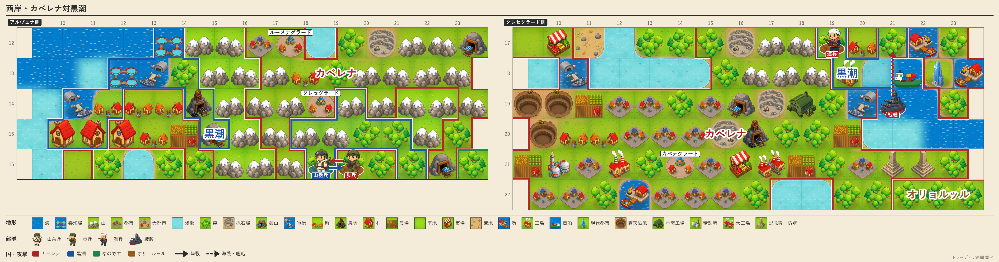

チェスへ宣戦、四か国に
灰岩も加わり包囲迫る
「全員敵」掲げる人口97万の大国に、王国軍陣営が束で向かう 開戦は第159〜161期に連なる

【総合部】チェス＝シロバキア共和国に宣戦する国が、第156期に四つへ増えた。灰岩王国が今期あらたに宣戦を布告し、第161期の開戦が決まった。すでに白波王国とは交戦中で、銀嶺侯国が第159期、金野伯爵領が第160期に開戦する見通しだ。灰岩を盟主とする王国軍陣営の五か国のうち、少なくとも三か国がチェスに矛先を向けたことになる。人口97万を抱える大国は、四方から期日を区切って攻められる立場に立たされた。
チェスは政府声明で「全員敵なので一人残らず消します」と、周辺国すべてを敵と見なす強硬な姿勢を掲げている。だが今期、その足元では火災が八か所で起き、都市と町あわせて四万八百人が死亡した。外へ身構えるより先に、内から人口を削られている。宣戦の連鎖は2面、チェスの火災は6面。
首都アルヴェナ陥落、黒潮はなお工場を建てる
カペレナ王国は今期、黒潮自治国の首都アルヴェナの町を占領した。村も一つ失い、山岳兵一部隊を全滅させられた。人口は一万八千四百人。それでも黒潮は、カペレナ領の一画に工場を建て、別の一画を開拓した。奪われながら、奪った先で暮らしを広げる小国の粘りがある。詳報は4面。
泰平、帝都脇の炭坑をまた奪う
泰平天国はアルガリスト帝国の炭坑を占領し、帝国歩兵一部隊を全滅させた。帝国は人口四千六百人、領土七区画まで縮んだ。首都アルガリストはなお帝国領に残るが、守りの余地は一段と狭まった。詳報は3面。